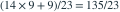
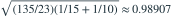

两独立正态样本：n=15、均值 30、标准差 3；m=10、均值 b、标准差 1。假设总体方差相等，采用 5% 双侧 t 检验，。使均值相等假设不被拒绝的 b 的上端点约为？
- A32.05
- B31.64
- C31.69
- D32.09
我已思考，展开答案与解析
正确答案：A
- 合并方差为

。标准误为
。上端点为 。
易错提醒先明确分布参数、独立性和统计量的定义，再进行计算。
资料校订：原答案选 32.09；重新计算应约为 32.05，已修正选项与解析。
用户提供练手卷 · 原第 14 题；题目 PDF 第 3 页
单选改编；题干与选项已重新编排